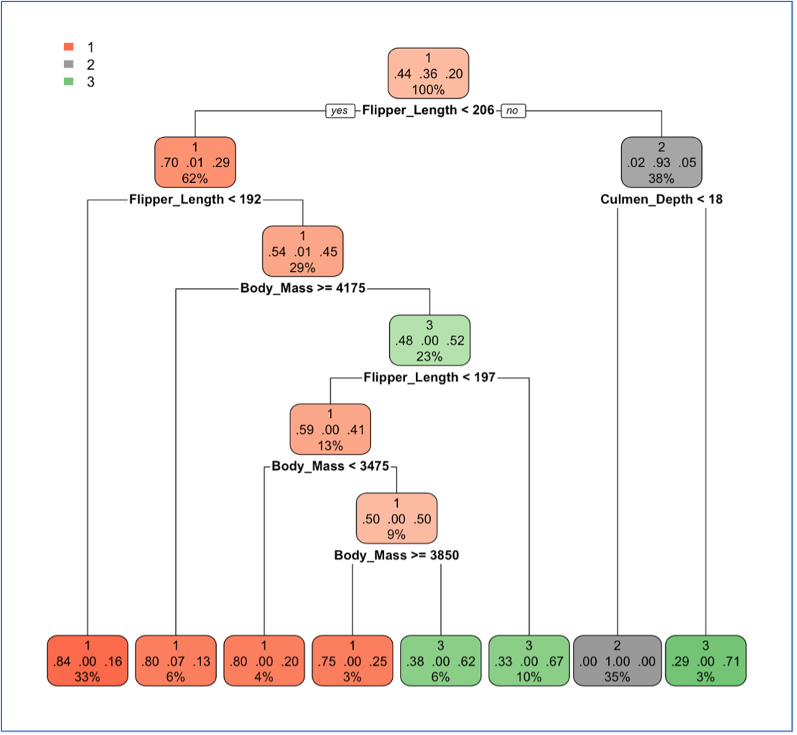
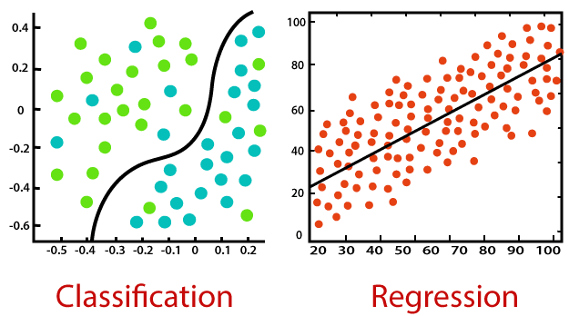

Home of Supervised Learning
Hopefully you have had the chance to look at the overview and the unsupervised learning sections of the educational tool so far. In this section we will review supervised learning and how it can be used to develop different applications and the industries that these applications are used in.
What is Supervised Learning
Well if unsupervised learning is when a model is trained without labelling the data, then supervised learning is the opposite. In this model, we have data that has been labelled, so we know what the data is before it is put into the model.
Here you can see a diagram of the supervised learning model.

This is a diagram that shows how a supervised model works. Here you can that the model is trained on labelled data and then tested with test data. The outcomes are then measured and the model is tweaked if needed. This image is from https://www.javatpoint.com/supervised-machine-learning .
Classification
Classification is one of the key applications of supervised learning. It is used to classify data into a category. From there, a model can then be used to classify something. For example, if you told a model what a cat looked like, and then told the model what a dog looked like, theoretically, when shown a picture of one of these animals, it can distinguish between the two.
Here is an example of classification tree. This algorithm looks at the labelled data of 3 different penguin species. From this, the algorithm has classified the penguin based on the body mass, flipper length and culmen size.
Try this classification tool.
Here is a model that has been trained to distinguish between background noise and whistling. You can try whistling into the microphone and see how successful it is. You can also see this model here: View Model
You can make your own model here: Teachable Machine
The closer to 1 the value is, the more of that variable it is picking up. Click start to try
Here is another example of classification, here you can draw in a number, and hopefully it will output the correct value. What is happening is that the model is comparing your number to predefined numbers (0-9). This is obviously a very narrow use of supervised AI, but you can start to see how we can build on this to create more interesting models that fix real-world problems.
This was made a simple programming language called Scratch, whilst this is a simple language, you can do many interesting things with it. Credit to Nishpish for making this model.
There are many different classification algorithms that are used such as:
- Decision Trees
- K Nearest Neighbour
- Neural Networks
Regression
Regression analysis is another method of supervised learning. In this method, data is used to predict what will happen next. For example, if the weather follows a specific pattern, a supervised model could look at what the weather will be like in the future. It can do this by looking at historical data, such as the time of year, current weather, location, and can make a prediction based on these variables.
Another example of this could be in forecasting wages of an individual based on different variables. The model could then show what their potential earnings could be.
Here is an image that shows the classification and regression algorithms in use.
This image is from https://www.javatpoint.com/regression-vs-classification-in-machine-learning